Префектура Тоттори · Курайоси · искусство и мингэй
Курайоси: старые склады, новый музей, стекло, краб и трёхцветные данго
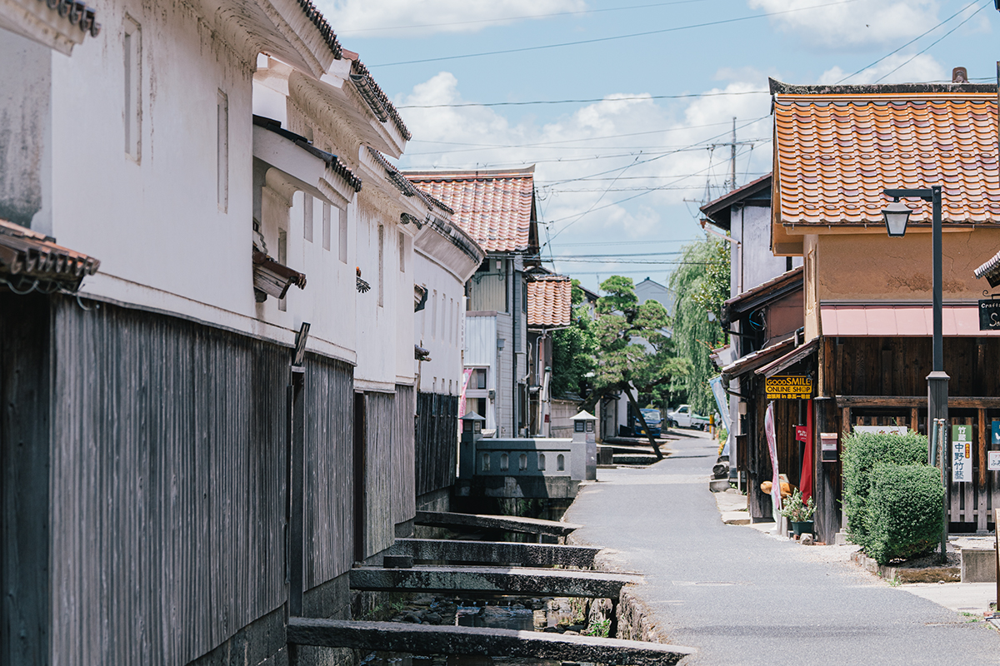
Курайоси, небольшой город в центре префектуры Тоттори, давно жил искусством, а в 2025 году получил новый художественный музей. Рядом с ним белые склады над каналом, лавка стеклодува, старый ресторан, где любили собираться художники, и трёхцветные данго, которые однажды доехали до Версаля.
Город
Курайоси: старые улицы и новое искусство
Префектура Тоттори, самая малонаселённая в Японии, славится дюнами, морем и щедрой местной едой. Её восточная часть с городом Тоттори дала начало движению мингэй, за красоту простых вещей, сделанных руками. А в центральной части, вокруг города Курайоси (не путать с Курасики в соседней префектуре Окаяма), в исторических кварталах прорастает новое искусство.
Курайоси и раньше не был художественной глушью. Здесь работало объединение художников «Сакю-ся», отсюда родом рано умерший живописец Кандзи Маэда, а гравёр Томисабуро Хасэгава и его товарищи развивали здесь движение мингэй.
В марте 2025 года в городе открылся Художественный музей префектуры Тоттори и принёс сюда свежий ветер. Ещё раньше мир искусства всколыхнула покупка музеем работ Энди Уорхола (1928–1987), американского художника, главного лица поп-арта. Девиз музея звучит как «Открытость!».
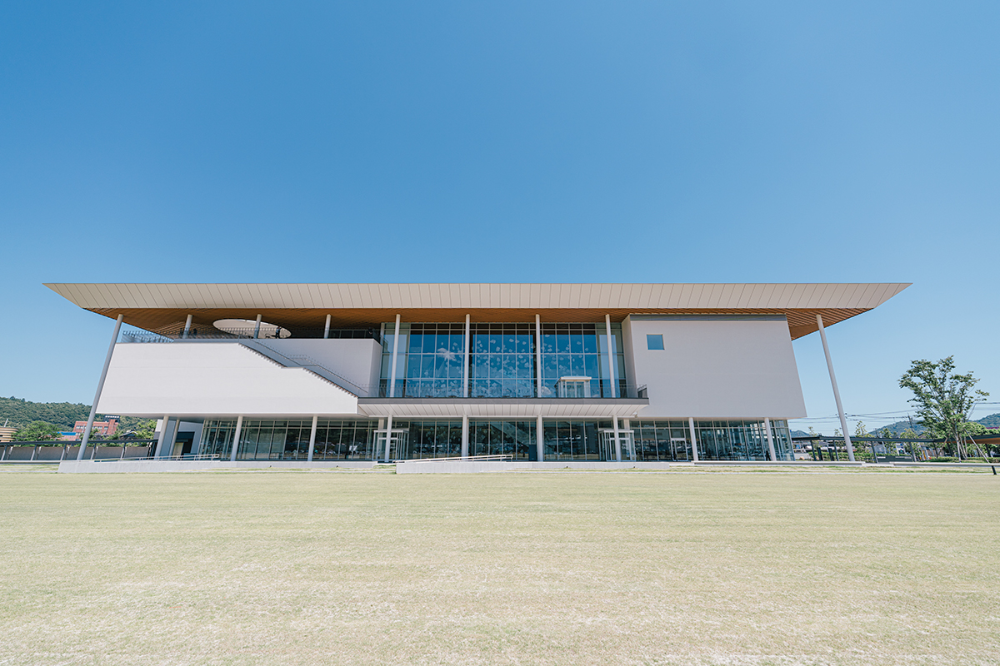
В центре здания на все три этажа поднимается светлый атриум «Хирома», то есть «просторный зал». Открытая площадка «Энгава», названная по крытой галерее японского дома, переходит прямо в исторический парк на месте древнего храма Омидо, который охраняется государством. С обзорной террасы видна гора Дайсэн, самая высокая вершина региона. Многие зоны музея открыты для всех и бесплатны, и горожане приходят сюда просто отдохнуть.
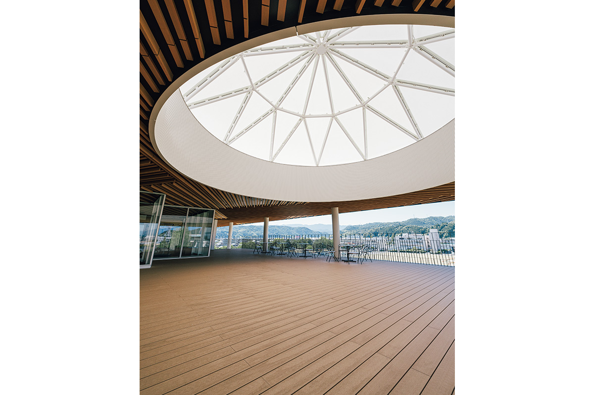
Ни одна прогулка по Курайоси не обходится без исторического квартала на реке Тамагава, у северного склона горы Утибуки, символа города. Когда-то здесь ткали знаменитую ткань курайоси-гасури с узором из заранее окрашенных нитей. Теперь бывший призамковый город охраняется государством как квартал традиционной застройки. Склады с белыми оштукатуренными стенами и красной черепицей сэкисю, лавки и дома эпох Эдо и Мэйдзи стоят здесь до сих пор, и уже одна прогулка вдоль канала успокаивает. Рядом со старыми семейными лавками всё чаще открывают свои дела переселенцы из других городов.
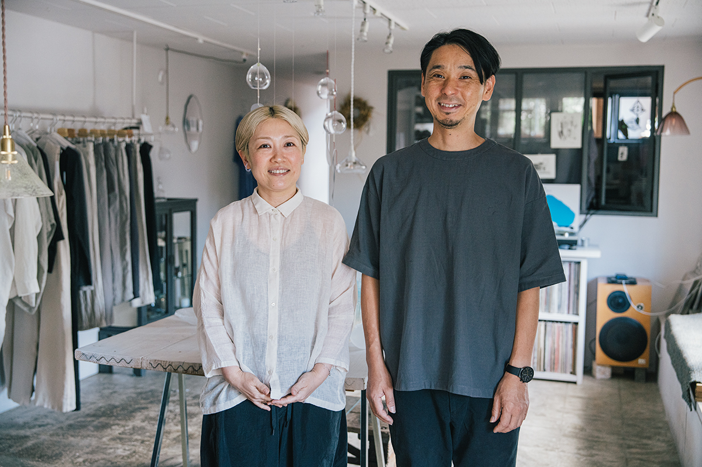
Одна из них приехала из Кобэ: стеклодув, хозяйка лавки стекла и музыки «Саон».
«В Курайоси искусство живёт в быту: местную еду здесь едят из местной посуды. Если гулять не спеша, обязательно почувствуешь здешний дух»
хозяйка лавки «Саон»
Музей
Художественный музей префектуры Тоттори
Музей вырос из художественного отдела Музея префектуры Тоттори и стал самостоятельным. В его собрании около 10 000 работ, прежде всего авторов, связанных с Тоттори: живописца Кандзи Маэды, фотографа Сёдзи Уэды (1913–2000), прославившегося постановочными снимками на дюнах, и других. На первом этаже работают магазин, кафе и детская зона, так что сюда можно заходить хоть каждый день: посмотреть, поговорить, выпить кофе.
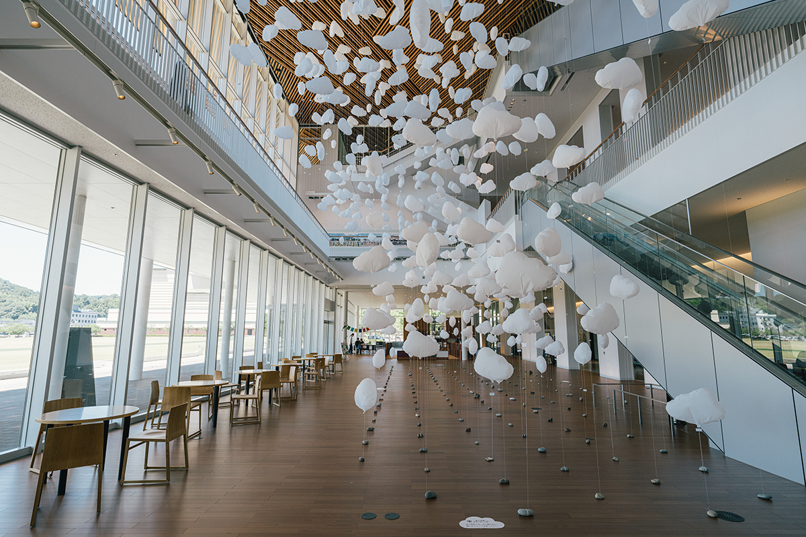
На втором этаже, в галерее постоянной коллекции, показывают скульптуры Синдо Цудзи (1910–1981), уроженца гор префектуры, получившего мировое признание. Третий этаж отдан временным выставкам.
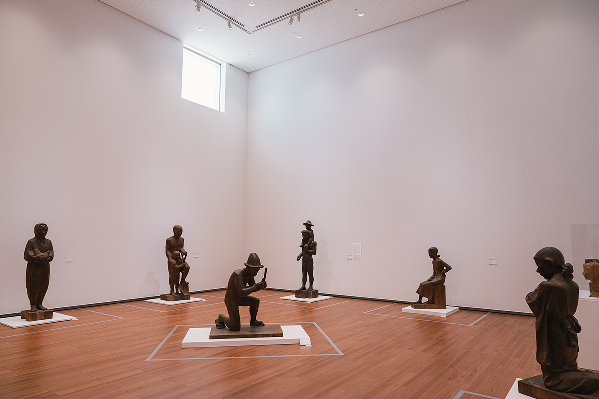
Художественный музей префектуры Тоттори
- Адрес
- префектура Тоттори, Курайоси, Дакёдзи-тё, 2-3-12
- Телефон
- +81 858-24-5442
- Часы работы
- 9:00–17:00, вход до 16:30
- Выходные
- понедельник
- Цены / Вход
- вход свободный, выставки коллекции и временные выставки платные (цена зависит от выставки)
- Как добраться
- от станции Курайоси около 9 минут на такси или на автобусе до остановки у музея
- Сайт
- tottori-moa.jp
Стекло
«Саон»: стекло и музыка в старом складе
«Саон» держат стеклодув и её муж, музыкант. Лавка стоит среди белых складов исторического квартала. Супруги своими руками перестроили старый склад, где когда-то были банк и общежитие его служащих. Внутри играет спокойная музыка, на полках стоят работы хозяйки и её друзей-мастеров, а ещё одежда, которую хозяева выбирают сами.
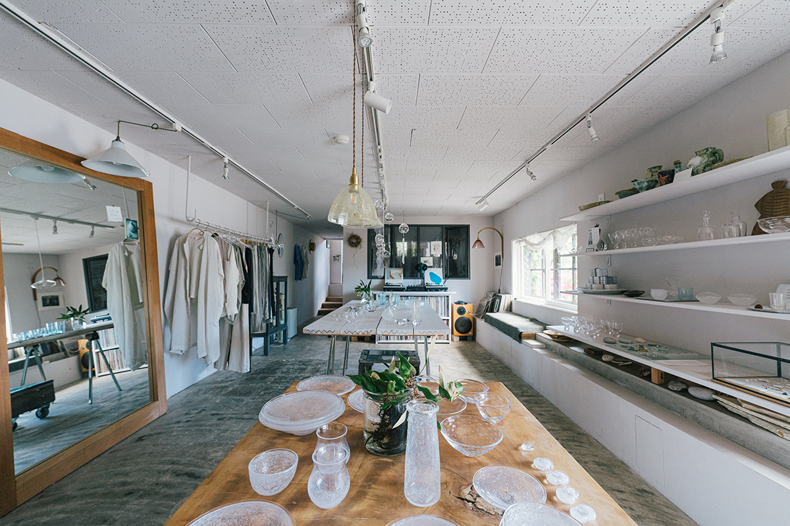
«Я хочу, чтобы в стекле оставалось ощущение, что оно было жидким. Берегу его мягкость и красоту и делаю посуду, которая подходит для жизни»
хозяйка лавки «Саон»
Хозяйка выдувает стекло свободно, без формы, и доверяет вдохновению. Её лёгкие, текучие вещи называют мингэй нового времени. Настенная ваза «Борса» (по-итальянски «сумка») мягким изгибом заполняет пустоту на стене и стоила 19 800 иен в 2025 году.
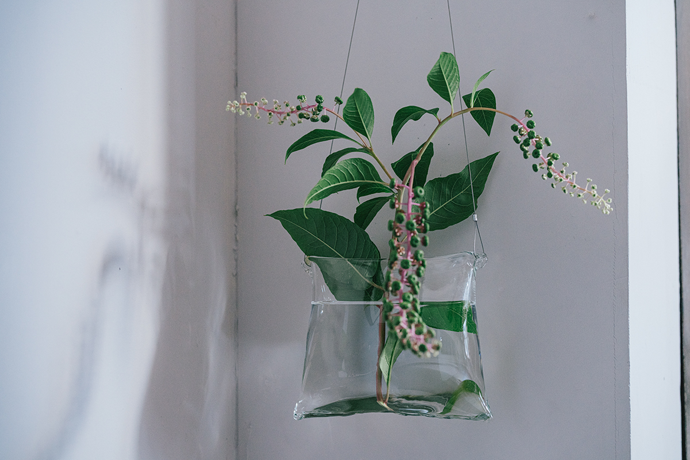
Другие серии тоже легко узнать. В «Посуде с пузырьками» застыли тысячи пузырьков воздуха. «Винт» получают с помощью центробежной силы и тяжести, а потом закручивают, и в нём видно, какое мягкое на самом деле стекло. Пресс-папье «Облачная капля» и «Водяная капля» похожи на капли воды и обрывки облаков.
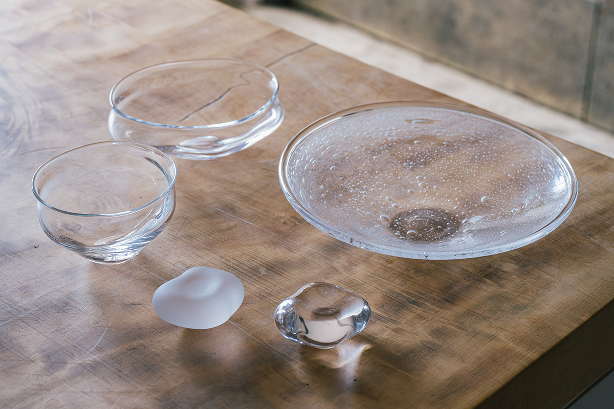
«Саон»
- Адрес
- префектура Тоттори, Курайоси, Уомати, 2521
- Телефон
- +81 858-38-9023
- Часы работы
- 11:00–18:00
- Выходные
- понедельник, вторник
- Как добраться
- от станции Курайоси около 15 минут на такси или на автобусе до остановки у мэрии и парка Утибуки, затем около 3 минут пешком
- Сайт
- saon.jp
Ужин
«Китатэй Манъёси»: краб там, где бывал Сико Мунаката
В пяти минутах ходьбы от белых складов стоит старый ресторан японской кухни «Китатэй Манъёси». Когда-то он был салоном для художников: здесь бывали гравёр Сико Мунаката и Томисабуро Хасэгава.
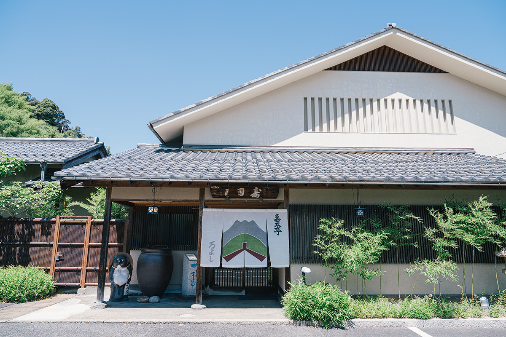
В залах выставлено много произведений искусства, среди них работы обоих гравёров, а к столу подают вагю из Тоттори, местные овощи и дары Японского моря.
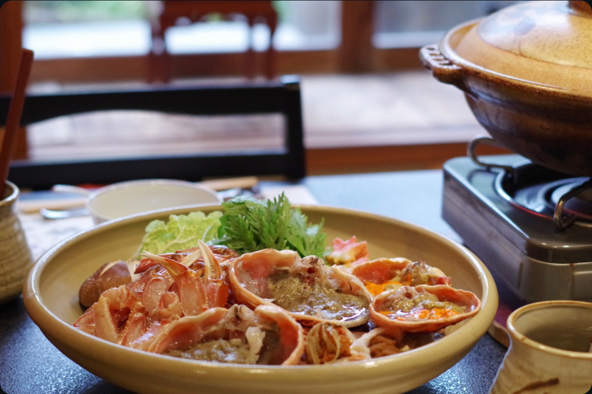
Название «Китатэй» тоже связано с Мунакатой. Говорят, что, войдя однажды во внутренние покои, он крикнул друзьям «Кита дэ!», то есть «Я пришёл!».
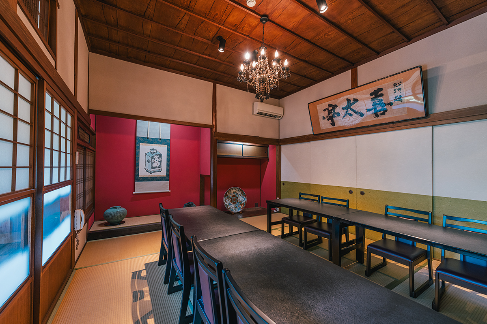
«Китатэй Манъёси»
- Адрес
- префектура Тоттори, Курайоси, Нака-но-мати, 766
- Телефон
- +81 858-22-2778
- Часы работы
- 11:30–14:00, 17:30–21:00, ужин только по предварительной записи
- Выходные
- понедельник (если это праздник, то вторник)
- Как добраться
- от станции Курайоси около 10 минут на такси или на автобусе до остановки Сэдзаки-мати, затем около 2 минут пешком
Сладость
«Утибуки-коэн данго»: трёхцветные шарики с гравюрой
Парк Утибуки у подножия одноимённой горы известен в Курайоси прежде всего сакурой. Главное угощение парка называется «Утибуки-коэн данго», то есть «данго из парка Утибуки». Это трёхцветные шарики размером около 3 сантиметров. Тесто делают из местной клейкой рисовой муки с сиропом и долго, тщательно пропаривают, а затем каждый шарик оборачивают одной из трёх паст: белой из фасоли тэбо, красной из гладко протёртой фасоли адзуки или зелёной с чаем маття.
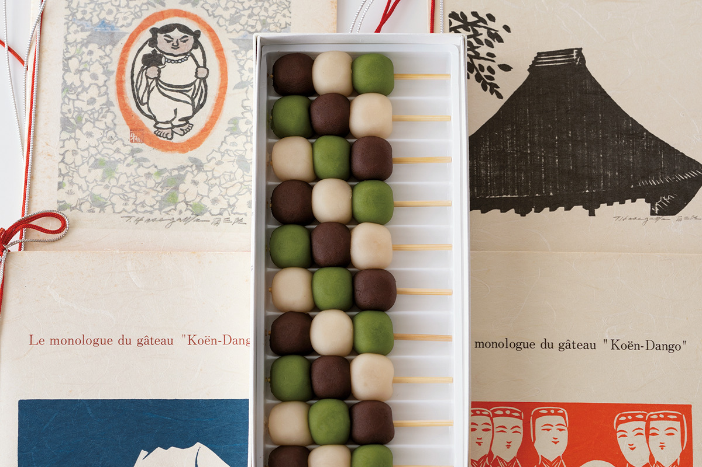
Кондитерской, которая их делает, больше 140 лет. Она занимается только данго и не добавляет в них никаких добавок: в этой честности и секрет славы.
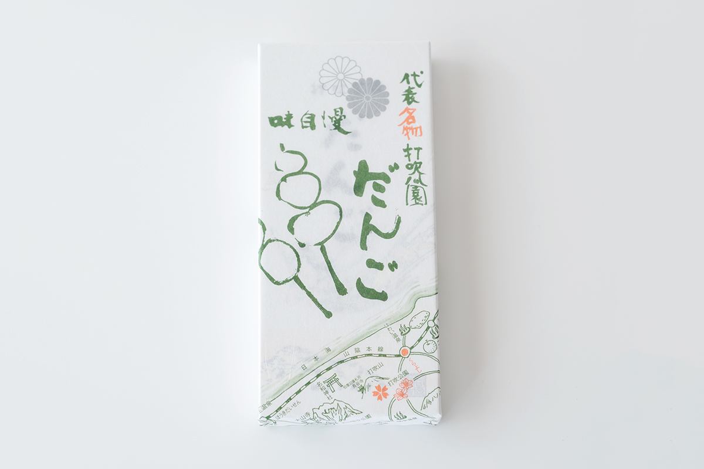
В 1986 году кондитерская привезла 2000 порций данго на большую чайную церемонию во Дворце конгрессов в Версале, а потом стала постоянным гостем японских фестивалей в разных странах. Под данго в коробке лежит закладка с гравюрой Томисабуро Хасэгавы, и в каждую зарубежную поездку кондитеры обязательно брали эти закладки с собой. В самом парке Утибуки висит рельеф Хасэгавы «Мальчик из Утибуки», и прохожие останавливаются на него посмотреть.
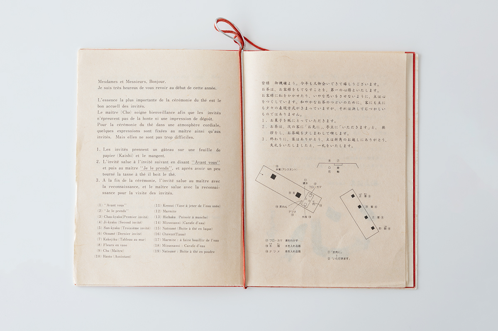
«Утибуки-коэн данго», главный магазин
- Адрес
- префектура Тоттори, Курайоси, Сайвай-тё, 459-1
- Телефон
- +81 858-23-0141
- Часы работы
- 8:00–17:30, кафе до 17:00
- Выходные
- без выходных, кроме 1 января
- Сайт
- kouendango.com
Фото: Ацуси Ямахира, Вакана Баба.